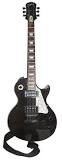

|  | กีตาร์ไฟฟ้าตัวแรกเริ่มผลิตขึ้นในศตวรรษที่ 20 โดยจอร์จ โบแชมป์ (George Beauchamp) ได้รับสิทธิบัตรใน ค.ศ. 1936 และร่วมกับริกเค่นแบ็กเกอร์ (Rickenbacker) ตั้งบริษัท Electro String Instrument ผลิตกีตาร์ไฟฟ้าในปลายคริสต์ทศวรรษ 1930 ต่อมาในคริสต์ทศวรรษ 1960 จอห์น เลนนอน สมาชิกวงเดอะบีทเทิลส์ใช้กีตาร์ยี่ห้อนี้ ส่งผลให้ ... | ||||
|---|---|---|---|---|---|
|
ประวัติ |
||||
กีตาร์ไฟฟ้ามีความแตกต่างจากกีต้าร์โปร่งและ กีต้าร์โปร่งไฟฟ้า (Acoustic Electric Guitar) ตรงที่ลำตัวของกีตาร์ไฟฟ้าโดยส่วนมากจะไม่มีโพรงเสียง หรืออาจเรียกว่า "ลำตัวตัน" (Solid Body) อย่างไรก็ดี กีตาร์ไฟฟ้าอาจหมายรวมถึง กีตาร์ที่มีโพรงเสียงบางประเภทที่มีการติดตั้ง Pick Upเช่น(Hollow Body)เเละ (Semi Hollow Body) |